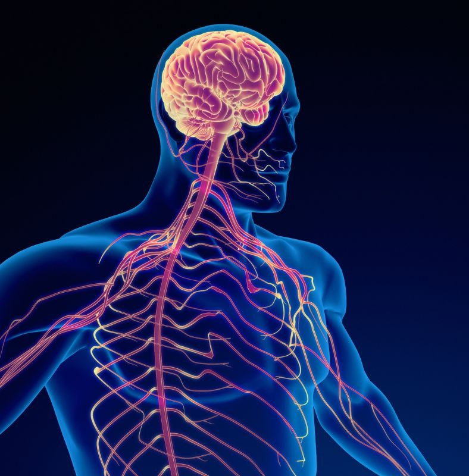

Actividades escolares de ciencias naturales
Conoce nuestras actividades académicas.
El sistema reproductor: masculino y femenino
Abril 2025
El aparato reproductor de la mujer incluye los ovarios, las trompas de Falopio, el útero, el cuello uterino y la vagina. El del hombre, incluye la próstata, los testículos y el pene.
Ver videoLas enfermedades del sitema nervioso
Tema de ciencias naturales
Las enfermedades del sistema nervioso son afecciones que afectan el cerebro, la médula espinal, los nervios y otros tejidos que componen el sistema nervioso
Ver imagen{kind=link}
Ver tema
{kind=link}

Sistema nervioso periférico
Taller de ciencias, 28 abril 2025
El sistema nervioso periférico es una red de nervios que recorre la cabeza, el cuello y el cuerpo. Transporta mensajes desde y hacia el sistema nervioso central (el cerebro y la médula espinal). En conjunto, el sistema nervioso periférico y el sistema nervioso central conforman el sistema nervioso.Video del tema
Lámina
{kind=link}
Ver busqueda de palabras
Ver actividad: Sistema nervioso
Ver actividad: Enfermedades y cuidados del sistema nervioso

Manualidad de la tierra
Abril 2025
Esta manualidad representa de que devemos cuidar nuestro planta :)
Ver imagen